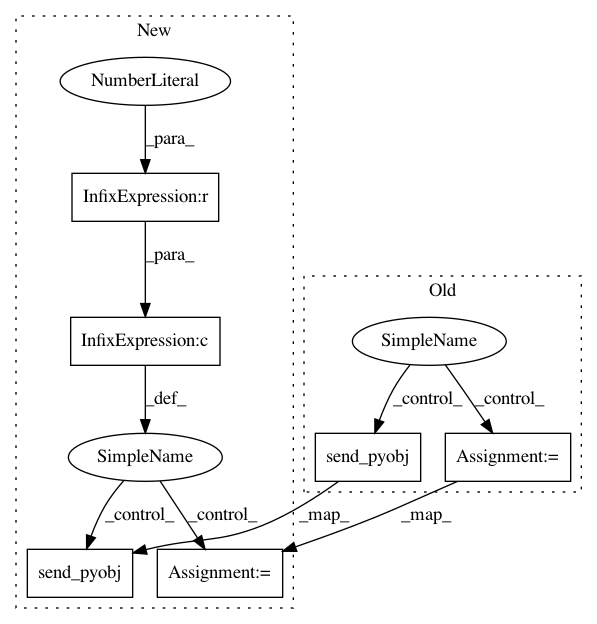

b6d57e6705748b6589e0d0a38cfe190d131571bc,src/sos/controller.py,WorkerManager,kill_all,#WorkerManager#,270
Before Change
// we should get a ready signal
if self._substep_backend_socket.poll(100):
self._substep_backend_socket.recv_pyobj()
self._substep_backend_socket.send_pyobj(None)
self._n_working_workers -= 1
self.report("kill a done worker")
class Controller(threading.Thread):
After Change
if env.config["exec_mode"] == "slave":
self.tapping_controller_socket = create_socket(self.context, zmq.PULL)
self.tapping_controller_socket.connect(
f"tcp://127.0.0.1:{env.config["sockets"]["tapping_controller"]}")
//monitor_socket = self.master_request_socket.get_monitor_socket()
// tell others that the sockets are ready
self.ready.set()
// create a manager
from .workers import WorkerManager
self.workers = WorkerManager(env.config["max_procs"], self.worker_backend_socket)
In pattern: SUPERPATTERN
Frequency: 3
Non-data size: 6
Instances
Project Name: vatlab/SoS
Commit Name: b6d57e6705748b6589e0d0a38cfe190d131571bc
Time: 2019-02-24
Author: ben.bog@gmail.com
File Name: src/sos/controller.py
Class Name: WorkerManager
Method Name: kill_all
Project Name: vatlab/SoS
Commit Name: 9c49f44c6859e966bb0a1ae48867ace8dfea716d
Time: 2019-02-17
Author: ben.bog@gmail.com
File Name: src/sos/controller.py
Class Name: WorkerManager
Method Name: check_workers
Project Name: vatlab/SoS
Commit Name: b6d57e6705748b6589e0d0a38cfe190d131571bc
Time: 2019-02-24
Author: ben.bog@gmail.com
File Name: src/sos/controller.py
Class Name: WorkerManager
Method Name: check_workers